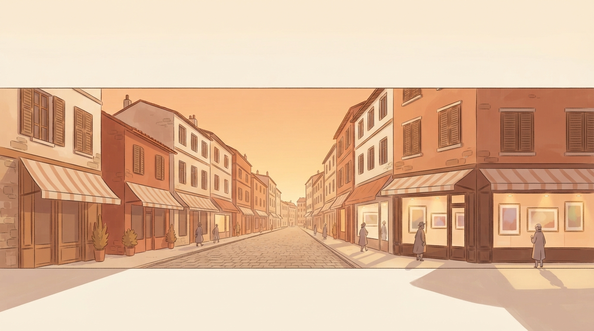

Experience
스크롤하지 말고,
걸어 들어오세요
화면 속 이미지가 아니라,
벽에 걸린 작품 앞에 서게 됩니다.
네 개 층의 미술관
지하 미디어관부터 옥상 테라스까지,
걸어서.
함께 걷는 관람
낯선 이와 같은 작품 앞에,
나란히.
링크 하나로 초대
가입 없이,
누르는 순간 당신의 미술관.
오픈월드
미술관 밖으로 —
여러 전시가 늘어선 거리를 함께 걸어 보세요.
Live from the Museum
오늘,
전시장에 다녀간 사람들
방명록에 남긴 이름과 전시장에서 찍은 사진이 이 자리에 차곡차곡 쌓입니다.
For Artists
첫 개인전,
오늘 열 수 있습니다
작품 몇 점과 소개 한 줄이면 충분합니다. 무료로 여섯 점까지 걸 수 있고, 스튜디오에서 미리 걸어 보며 다듬은 뒤 링크 하나로 공개하세요.
작품은 당신이 만들었으니, 미술관은 저희가 지었습니다.
Pricing
요금제
무료로 시작하세요. 전시가 커지면 그때 프리미엄으로 넓히면 됩니다.
Free
0원
- 전시 공유 링크 무제한
- 작품 6점 · 대표작 1점
- 기본 테마 2종 — 맑은 오후 · 시간 연동
- 멀티플레이 · 방명록 · AI 관객
EARLY BIRD
Premium
월 4,900원 정식 출시 예정가
- 작품 14점 · 대표작 2점
- 모든 전시 테마 — 석양 · 야간 · 시네마틱
- 커스텀 도메인 연결 (준비 중)
- 우선 지원
결제 기능은 준비 중입니다. 그동안은 활성화 코드로 프리미엄을 무료로 이용하실 수 있어요 — 코드는 메일로 요청해 주세요.